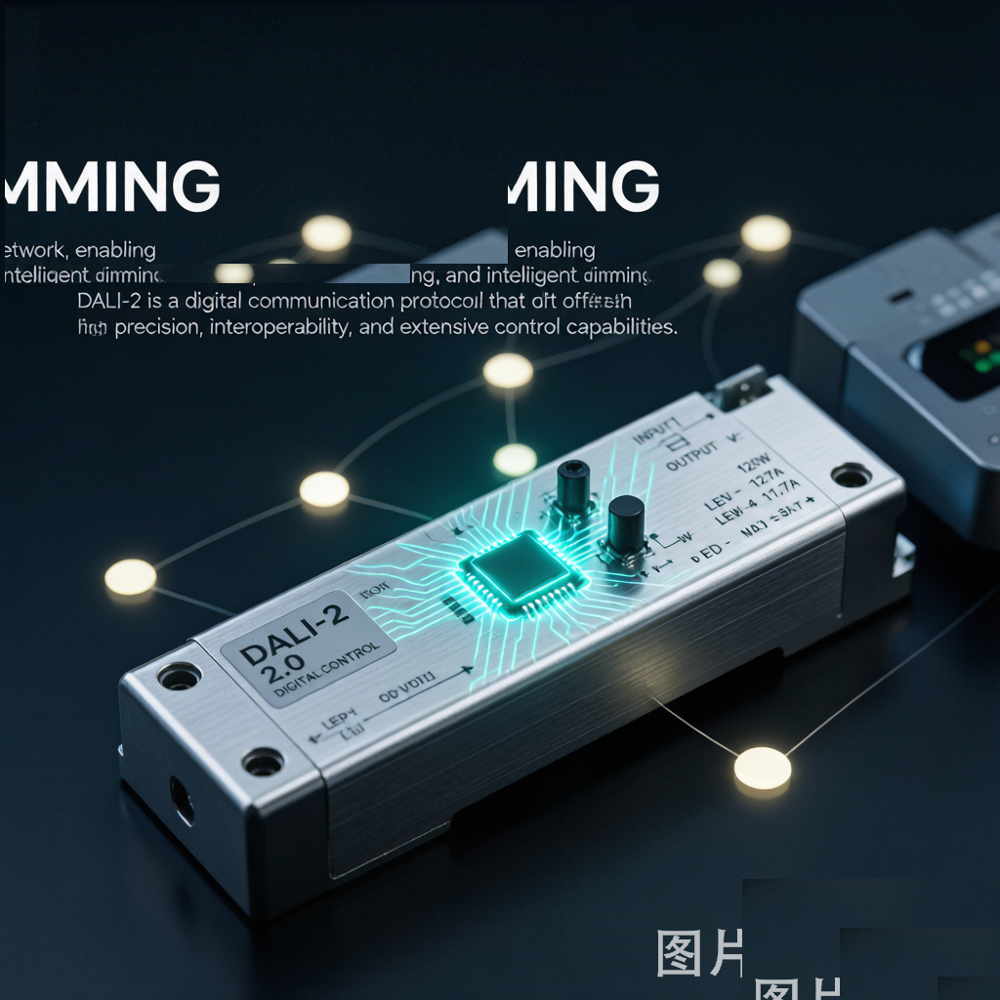
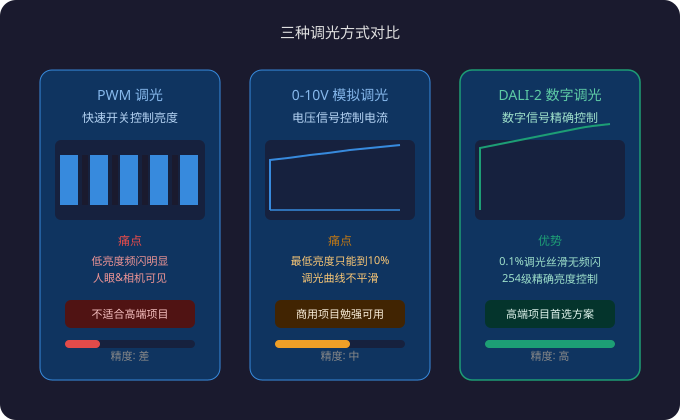
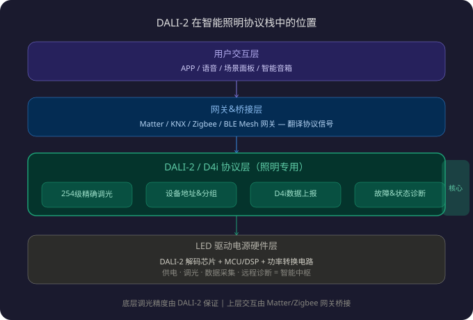
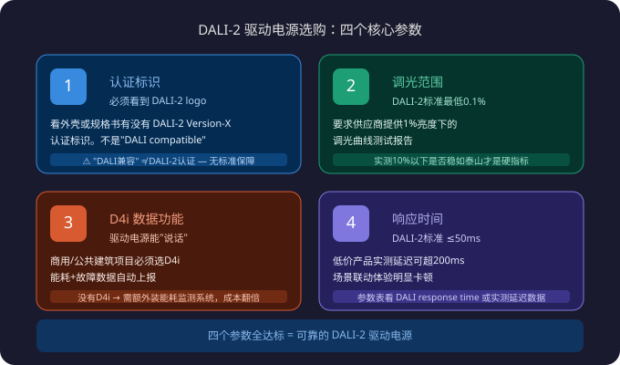

如果你做过商业照明或者智能酒店项目，大概率遇到过这种情况：甲方要求"调光要丝滑，亮度从1%到100%不能有一点跳跃"，结果装上去的灯，要么调光不平滑像跳台阶，要么低亮度时频闪肉眼可见，甲方验收一遍就打回来了。
问题不在灯珠，也不在APP——问题在驱动电源的调光方式。
2026光亚展上最大的风向标之一，就是LED驱动电源正在从单纯的"供电模块"进化为智能照明系统的**"神经中枢"。支撑这个进化的核心技术，就是DALI-2数字调光协议和它的数据扩展版本D4i**。这篇文章用大白话讲清楚：DALI-2到底解决了什么问题、和别的调光方式有什么不同、选驱动电源时怎么看DALI-2参数。
调光的"坑"：PWM和模拟调光的致命短板
先说为什么传统调光方式让人抓狂。
目前市面上LED驱动电源的主流调光方式有三种：

| 调光方式 | 工作原理 | 最大痛点 |
|---|---|---|
| PWM调光 | 快速开关LED（一亮一灭），靠开关频率和占空比控制亮度 | 低亮度时频闪明显，人眼和相机都能看见闪烁 |
| 模拟调光(0-10V) | 用0到10V的电压信号控制输出电流大小 | 调光曲线不平滑，最低亮度通常只能到10%，1%调光做不到 |
| DALI-2数字调光 | 用数字信号发送指令（0-254级亮度），驱动电源内部精确控制电流 | 需要驱动电源内置DALI解码芯片，成本略高 |
打个比方：PWM调光就像快速开关水龙头来控制出水量——1秒开关100次，平均出水量就少。但你仔细感受，水流还是一阵一阵的。模拟调光像拧水龙头，但拧到最小时水流还是哗哗的，拧不到涓涓细流。DALI-2数字调光则像电子控温花洒——你设25.5°C，它就精确到25.5°C，温差0.1度以内。
低亮度调光不平滑和频闪，恰恰是高端商业照明、博物馆、酒店项目最怕的问题。展厅里一幅画在5%亮度下频闪明显，甲方绝对不签验收单。
DALI-2到底是什么？为什么2026年突然火了
DALI（Digital Addressable Lighting Interface）不是新东西——1990年代就有了。但DALI-2是2020年后升级的新版本，解决了老DALI的几个致命问题，加上D4i数据扩展和Matter协议的推波助澜，2026年真正迎来了爆发。

DALI-2的核心变化有三点：
1. 设备认证强制化
老DALI时代，任何厂家声称"兼容DALI"就行，实际兼容性五花八门——有的灯只能调50%到100%，有的响应延迟300ms以上。DALI-2引入了强制认证机制：你的驱动电源要通过IEC 62386标准的认证测试，才能叫"DALI-2"。这意味着买DALI-2认证的产品，调光0.1%-100%丝滑、响应时间<50ms，是有标准兜底的。
2. D4i数据扩展——驱动电源能"说话"了
D4i是DALI-2的数据扩展协议，让驱动电源不仅能接收调光指令，还能主动上报数据：灯具功率、累计能耗、运行时间、故障状态。这听起来像小事？但对物业管理和节能运营是颠覆性的——以前要查一栋楼哪个灯坏了、哪个区域能耗超标，得装额外传感器；现在驱动电源自己就能上报，一个DALI-2驱动电源 = 供电模块 + 调光器 + 传感器 + 诊断器。
这就是光亚展上说的"驱动电源从供电模块进化为智能神经中枢"——不是噱头，是D4i协议实实在在的能力。
3. 与Matter/KNX/Zigbee的桥接
DALI-2是照明专用协议，不直接连智能家居APP。但现在有DALI-2到Matter/Zigbee/KNX的网关桥接方案——驱动电源通过DALI-2组网，网关把DALI信号翻译成Matter/Zigbee信号，接入苹果HomeKit、米家等生态。底层调光精度用DALI-2保证，上层用户交互用Matter/Zigbee完成，两全其美。
选购DALI-2驱动电源：看这四个参数就够了
说了这么多原理，到你实际买灯选驱动电源时，怎么看DALI-2参数？盯住这四个就行：

① 认证标识
看驱动电源外壳或规格书上有没有DALI-2 logo（不是"DALI compatible"，必须是"DALI-2 Version-X"）。没认证的"DALI兼容"产品，调光性能没有任何标准保障。
② 调光范围
DALI-2标准最低亮度是0.1%（地址码1=0.1%）。但不同厂家的实际表现差异很大——有的标0.1%但10%以下就开始抖动，有的真正做到0.1%稳如泰山。买之前要求供应商提供1%亮度下的调光曲线测试报告，这是最硬的指标。
③ D4i数据功能
如果你做的是商业/公共建筑项目，必须选带D4i功能的DALI-2驱动电源。D4i上报的能耗和故障数据，直接关系到后期运维成本。没有D4i，你就得多装一套能耗监测系统，成本翻倍。
④ 响应时间
DALI-2标准要求指令响应≤50ms。但实测发现，部分低价DALI-2驱动电源在调光场景切换时延迟超过200ms，场景联动体验明显卡顿。参数表看"DALI response time"或实测延迟数据。
一个实际案例：DALI-2怎么改变项目交付
拿一个实际项目来说。某五星级酒店200间客房，全屋智能照明：
- 不用DALI-2的方案：每间房4-6个0-10V调光驱动，调光最低10%，低亮度频闪；调光器+驱动分开采购，物料清单复杂；故障定位靠人工巡检，维修响应48小时以上。
- 用DALI-2+D4i驱动电源的方案：每间房4-6个DALI-2驱动，调光最低0.1%丝滑无频闪；驱动自带故障上报，物业后台实时看到哪间房哪个灯异常；节能数据D4i自动采集，不需要额外装能耗传感器。
物料成本对比：DALI-2驱动电源单价比0-10V贵约15-20%，但省掉了调光器、能耗传感器的采购和安装成本，综合成本反而更低。运维成本差距更大——0-10V方案年运维费约为初始成本的8-10%，DALI-2+D4i方案降到3-5%。
耐利普怎么看DALI-2？
作为LED驱动电源厂家，耐利普(Nexlamp)已经在多条产品线上布局DALI-2认证。我们的判断很简单：DALI-2不是可选项，是必然方向。原因有三：
- 商业照明项目调光精度要求越来越苛刻，0-10V和PWM已经无法满足1%调光和0频闪的验收标准。
- D4i数据功能让驱动电源从"被动供电"变成"主动服务"，这是物业和运维最想要的。
- DALI-2+Matter桥接方案打通了专业照明和智能家居的墙，一块驱动电源既能服务专业项目，又能接入家庭生态。
如果你正在做商业照明选型或者酒店智能照明项目，欢迎联系耐利普，我们可以提供DALI-2驱动电源的调光测试报告和D4i数据演示。
本文由耐利普(Nexlamp)技术团队撰写，专注于LED驱动电源与智能照明解决方案。